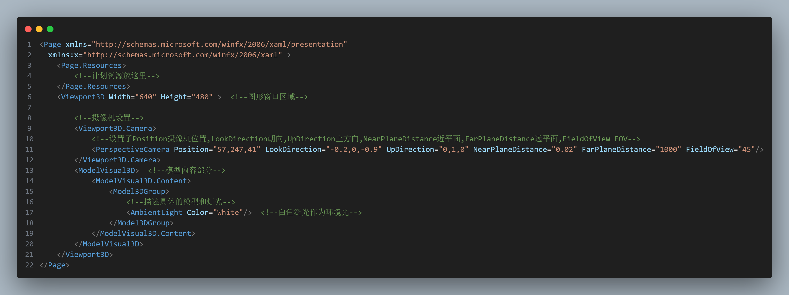

6.固定功能的3D图形平台和层次建模简介
6.1 引言
6.1.1 WPF 3D部分的设计
常用的3D图形平台很多,有不同的设计目的,一些追求图像的真实感而不关心消耗的成本(影视),一些平台保证一定的物理性模拟真实感的基础上追求交互性(例如Ureal和Unity'),一些则在质量方面做出妥协而追求多种硬件平台上的高性能(手机游戏)
WPF平台式一个保留模式(RM)平台,会维护一个层次场景图并将其存储在该平台上.
6.1.2 对光和物体交互的物理过程的近似
基于物体材料的反射特性,每个物体都会反射一部分入射光吸收一部分入射光.
物体每个表面接收的光当中,一部分来自直接入射光,一部分则来自于其他物体表面反射而来.
递归计算物体之间的反射需要大量的性能,电影等可以接收数小时的消耗来换取一帧的真实感,而游戏等只能采用真实感尚且过得去的快速算法来近似.
这些算法当中的经典算法叫做固定功能3D图形管线,直到近代才被可编程渲染管线所替代.
6.1.3 WPF 3D概述
WPF的3D功能需要创建一个Viewport3D实例,然后创建几何对象,指定光源和摄像机.采用的事右手坐标系.单位是抽象可以自定义的.
位于摄像机视锥体内的物体会被显示,WPF会自动将代码和后台匹配,所以变动可以实时更新.
6.2 网格和光照属性
迈出了第一步,创建了一个视窗,设置了摄像机
